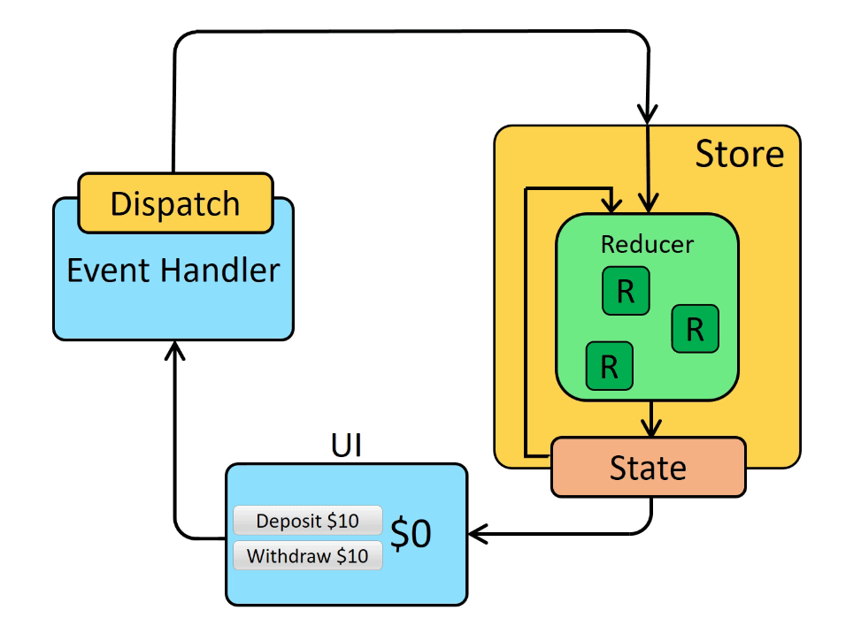

Redux
接下來的章節將介紹一個 React 生態圈中很重要的 library - Redux
What is “Redux”?
首先，第一個問題一定是 Redux 是什麼 ? 在問這個問題之前，先來談談在過去的章節中不斷被使用到的 state，state 的使用情境不外乎就是以下 3 種:
Local State: 最單純的 state 使用，只在單一 component 透過
useState()與useReducer()來建立並操作 state，常見的使用情境就是輸入欄位操作Cross-Component State: 其次是稍微複雜的使用情境，在打開一個 modal 時傳遞資料，就會需要透過
props來傳遞 stateApp-Wide State: 而有些情況如使用者登入，其資料可能會影響到許多不同功能 component 的資料，這時候如果還透過 props 層層傳遞，就會顯得非常麻煩，因此管理共用 state 的需求就這麼誕生了
Redux vs React Context
那麼問題來了，在先前遇到 App-Wide State 的需求時，已經有了 context & provider 來解決這個問題了，為什麼我們還會需要 Redux ?
原因是 context 有幾個潛在的問題:
複雜且龐大的專案
在中小型的專案中，很多需求可以透過 context 輕易的解決，但當專案不但擴大時，context 不外乎會出現兩種情況
多層 provider: 如果維持每個 provider 維護特定功能，就會出現多層 provider nested JSX 的結構
1
2
3
4
5
6
7
8return (
<AuthConextProvider>
<ThemeContextProvider>
...many provider
<UserRegistration />
</ThemeContextProvider>
</AuthConextProvider>
);一個 provider 太多功能: 如果要避免上述情況，勢必得把許多不同功能寫在一個 provider，這也會造成另一個功能難以區分的問題
效能
官方有特別提到，如果是更新頻率高的 state 應用，在 context 中會非常消耗效能，雖然所謂的高頻率並沒有一個明確的定義，但當出現這種情境時，Redux 會是一個更好的解決方案
How Redux Works
Redux 會由 store 來管理所有 state，store 又可以依照功能將之拆分成許多 moduels，避免所有資料混在一起的情況 ; 任何 component 都可以透過 Subscription 的方式來取得 store 中的資料，並透過 Disptach 呼叫 Action，Action 會執行 Reducer Function Mutates 更新 store 中的資料，需要注意的是，這裡的 Reducer Function 並非先前所提到的 useReducer() hook，而是更新 store 資料的一種概念

資料參考
React - The Complete Guide (Incl Hooks, React Router, Redux)